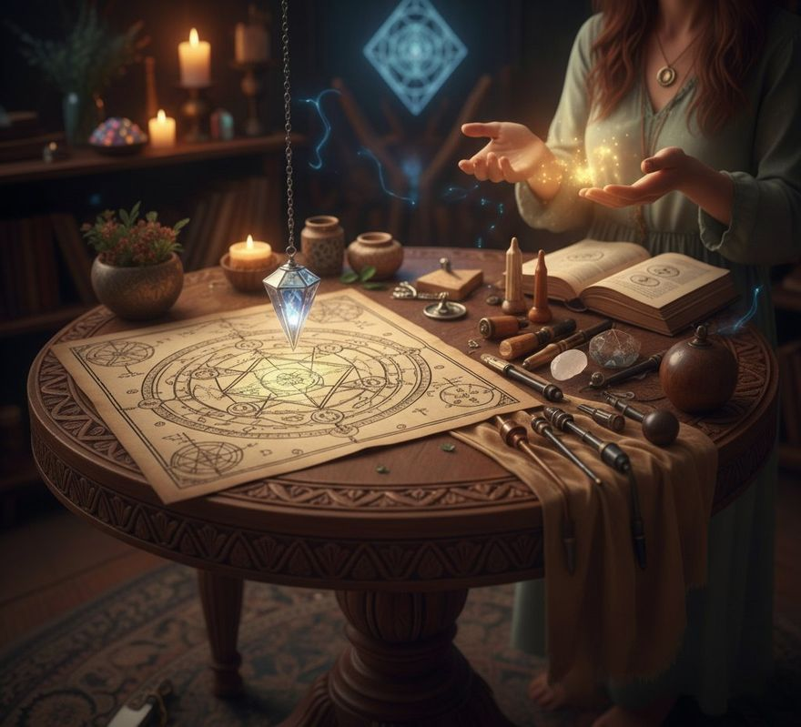

✦ Exploración bioenergética pendular ✦
Tu Energía
Habla
El péndulo no adivina el futuro, traduce lo que tu energía ya sabe.
Aprende a usar la radiestesia como una brújula práctica para tu vida diaria: sin mitos, sin adornos y con la neutralidad de quien busca respuestas claras en medio del ruido.
- 8 sesiones en vivo
- 33 gráficos
- Online

Antes de continuar
Una aclaratoria
importante
Si lo que quieres es aprender a utilizar el Péndulo, cómo funciona, sus movimientos y para qué lo puedes utilizar está bien, te lo puedo enseñar en 5 horas o menos.
lo que estás quieres en realidad es aprender una herramienta o técnica que te apoye en conocerte mejor.
Es un sistema
Una herramienta que te apoye en conocerte mejor, a explorar tus emociones, miedos y sentimientos, a soltar el juicio y la crítica, a ser neutral y objetivo ante las situaciones, personas y la vida, y a explorar la energía del universo y los mundos sutiles. Todo es frecuencia y vibración: este curso fue diseñado para ti.
“Tu Energía Habla” no es un simple curso de péndulo: es un Sistema de Navegación donde utilizas gráficos y el péndulo para explorar tu mundo interior y exterior. El péndulo es el lápiz o tu varita de conexión y los gráficos la guía para que puedas interpretar lo que ya sabes o intuyes.
¿Qué vas a lograr?
Aprenderás a escuchar
a tu alma
No solo a usar un péndulo.
Dominio técnico
- Usar el péndulo con confianza y neutralidad
- Navegar el sistema de 33 gráficos con claridad
- Reconocer emociones y patrones que quieras observar con más calma
- Explorar, desde el enfoque del curso, miedos, creencias y vínculos con vidas pasadas
Conocimiento profundo
- Entender tu estructura energética completa
- Explorar cuerpos sutiles, arquetipos, programas del alma
- Practicar un protocolo completo de exploración y cierre de sesión
- Conectar con tu intuición y voz interior
Autonomía y práctica
- Sistema de autoexploración continua que puedes usar solo
- Sentar las bases para acompañar a otros
- Herramienta de por vida para tu desarrollo personal
- Protocolo personal listo para usar cuando quieras
Programa del curso
8 sesiones, 33 gráficos,
un camino de autoexploración
🔥 Tu camino de transformación
Un sistema completo de autoexploración. En ocho sesiones aprenderás a usar el péndulo con confianza, a calibrar tu propio lenguaje energético y a explorar tu campo emocional, las estructuras de tu alma y las capas más profundas de tu Ser, con un sistema claro y estructurado de principio a fin.
1🌑El Umbral
El principio de todo: qué somos, de dónde viene esta herramienta y cómo hablar con ella
🌑El Umbral
El principio de todo: qué somos, de dónde viene esta herramienta y cómo hablar con ella
La primera sesión abre el espacio. Antes de tocar un gráfico, necesitas entender por qué esta herramienta tiene sentido, y qué está pasando realmente cuando sostienes un péndulo en la mano.
2🌓El Canal
Lo que los gráficos no pueden enseñarte: confiar, sentir y preguntar desde la neutralidad
🌓El Canal
Lo que los gráficos no pueden enseñarte: confiar, sentir y preguntar desde la neutralidad
La sesión más interior del módulo. Antes de ir a los gráficos, trabajamos lo que ningún sistema puede darte desde afuera: aprender a salir del juicio, abrir el canal y preguntar desde un lugar limpio.
3🌕El Mapa
Los cuerpos sutiles y el campo emocional completo
🌕El Mapa
Los cuerpos sutiles y el campo emocional completo
Aquí el sistema empieza a desplegarse. Primero completamos el mapa del Ser, las capas energéticas que el péndulo puede explorar. Luego trabajamos los primeros gráficos del estado emocional.
4🌟El Sistema
Los gráficos de respuesta, recursos y cierre, y la primera sesión completa
🌟El Sistema
Los gráficos de respuesta, recursos y cierre, y la primera sesión completa
La sesión más práctica del módulo. El resto es práctica pura, cada alumno hace su primera sesión completa de principio a fin solo.
🌿Las Estructuras del Alma
Las capas completas del Ser, la asistencia espiritual, las virtudes y los aprendizajes que el Alma trajo
🌀Las Raíces
Los programas del alma, los compromisos de vidas pasadas y los patrones que nos habitan
⚡Las Sombras
Las energías que interfieren, los bloqueos en el campo y los programas más profundos del ser
🌟El Sistema Completo
Los gráficos de armonización y cierre, y la primera sesión con el sistema entero
¿Es para ti?
Este curso es para ti si…
Marca lo que resuene contigo.
No es necesario que…
- Tengas experiencia previa con péndulo o radiestesia
- Tengas conocimientos de energía o metafísica
- Haber tomado ningún curso previo relacionado con el tema
- Ser terapeuta
Solo necesitas apertura y disposición a encontrarte contigo.
¿Qué incluye?
Todo lo que necesitas
para tu transformación
¿Quieres más información?
¿Listo para escuchar tu energía?
El péndulo no sabe más que tú; simplemente es el puente que te permite ver lo que tu alma ya sabe y aún no te has atrevido a escuchar.
Recuerda que el autoconocimiento no es un destino al cual llegar, sino el sagrado hábito de caminar hacia adentro con respeto, calma y curiosidad.
Escríbeme por WhatsApp →“Si quieres encontrar los secretos del universo, piensa en términos de energía, frecuencia y vibración.”Nikola Tesla